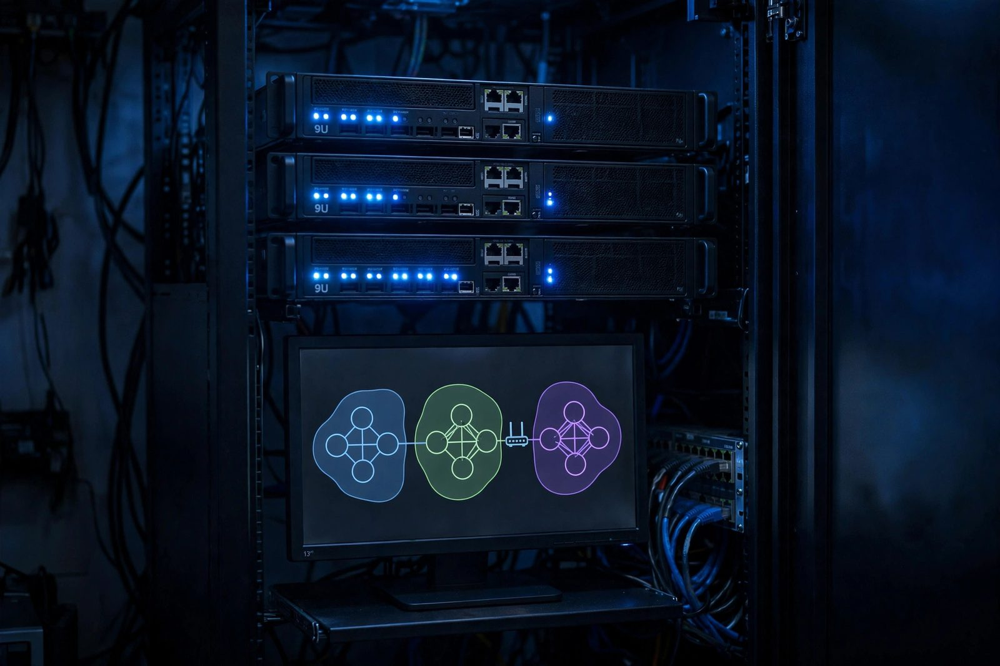

Proxmox VE Homelab: Zero-Trust Private Cloud
A 3-node Proxmox VE HA cluster with Ceph storage, VLAN segmentation, and zero-trust external access via Cloudflare Tunnel with Tailscale mesh fallback.

Overview
This private cloud keeps every self-hosted service reachable with zero open inbound ports. A 3-node Proxmox VE 8.1 cluster provides high availability over Ceph; the network is segmented into four VLANs by trust level; and the only path in from the internet is a Cloudflare Tunnel gated by Access policies, with Tailscale as an authenticated mesh fallback. No inbound ports are open on the homelab router, and tunnel traffic rides Cloudflare's edge network for low-latency global access.
This is a distinct build from the single-host Proxmox Homelab and from the 7-node Kubernetes cluster's own Proxmox underlay: these three nodes are dedicated to this HA cluster, and it is this cluster's services that the Cloudflare Tunnel publishes.
On three nodes, Ceph runs its monitors in quorum with pools at 3x replication, so any single node can fail without data loss, but there is no second failure margin and recovery is I/O heavy on consumer disks. Placement group counts were therefore tuned down from the Ceph defaults, trading slower recovery for stability, and Proxmox HA is set so guests restart on a surviving node when one fails.
Network Topology
Access policies] CF -->|cloudflared tunnel| DMZ[VLAN 40 DMZ] TS[Tailscale Mesh] -.fallback.-> MGMT subgraph Cluster["Proxmox VE HA Cluster: Ceph"] MGMT[VLAN 10 Mgmt] PROD[VLAN 20 Prod] IOT[VLAN 30 IoT] DMZ end PROD --- LXC[Docker LXC services]
Zero-Trust Access Flow
Cloudflare Access] I --> D[Device Posture
planned via WARP] D --> P{Policy} P -->|allow| Res[Service] P -->|deny| Block[403]
Implementation
Form the HA cluster
# On the first node: create the cluster
pvecm create tyf-cluster
# On the second and third nodes: join pointing at the first node's IP
pvecm add 192.168.10.10Expose a service via Cloudflare Tunnel (no open ports)
cloudflared tunnel route dns tyf-tunnel cloud.tyfsadik.orgAutomate local ZFS snapshots with sanoid
Sanoid protects the nodes' local ZFS pools (rpool). Ceph volumes are a separate scope: they need their own snapshot or backup strategy (Ceph snapshots, rbd mirroring, or vzdump to external storage), since sanoid does not see Ceph RBD images.
sanoid --configdir=/etc/sanoid --cron # hourly/daily/30-day retentionrpool/data@autosnap_2026-06-17_00:00:00_daily ... 30 kept
took 12 snapshots, pruned 3Key Results
- Removed all open inbound ports by routing every external path through Cloudflare Tunnel gated by Access policies.
- Low-latency global access via Cloudflare's edge network, with Tailscale as an authenticated mesh fallback.
- Automated local ZFS snapshots (hourly/daily) with 30-day retention via sanoid; Ceph volumes are covered by a separate snapshot strategy.
- Proxmox HA configured across the 3 nodes so guests restart on a surviving node if one fails.
How I built it
The design brief was strict: every self-hosted service reachable from anywhere, with zero public ingress. That means no open ports at all, identity-checked access at the edge, and a fallback path that stays authenticated.
- Phase 1, form the HA cluster: Joined three Proxmox VE 8.1 nodes with
pvecmand built Ceph shared storage across them for high availability. - Phase 2, segment the network: Carved the network into four VLANs by trust level: 10 for management, 20 for production, 30 for IoT, and 40 as the DMZ.
- Phase 3, close every port: Exposed services exclusively through Cloudflare Tunnel with Access policies, so the only path in from the internet is identity-gated and no inbound ports are open on the homelab router.
- Phase 4, add the mesh fallback: Configured Tailscale as an authenticated fallback so admin access survives even if the tunnel path has issues.
- Phase 5, automate data protection: Set up sanoid for automated local ZFS snapshots with hourly, daily, and 30-day retention, plus a separate snapshot strategy for Ceph volumes.
- Phase 6, deploy services: Ran the Docker-based services in LXC containers on the production VLAN behind the zero-trust front door.
What you need
| Category | Item | Notes |
|---|---|---|
| Hardware | 3 Proxmox nodes with redundant networking | Quorum needs three; Ceph wants separate fast links |
| Software | Proxmox VE 8.1, Ceph, sanoid | Clustering, distributed storage, snapshot automation |
| Software | cloudflared, Cloudflare Access | Tunnel ingress with identity policies |
| Software | Tailscale | Authenticated mesh fallback |
| Accounts | Cloudflare account with a domain | Tunnel DNS routing and Access policies |
| Skills | VLAN design and Ceph fundamentals | Placement groups, crush maps, and recovery behavior |
Challenges and lessons learned
- Ceph on three small nodes: Ceph assumes datacenter hardware and complains loudly on consumer gear. Lesson: tune placement group counts down and accept slower recovery in exchange for stability.
- Quorum sensitivity: losing one node in a three-node cluster leaves no failure margin. Lesson: monitor quorum health as a first-class alert, not an afterthought.
- Access policy UX: every new service needs its Access policy or users hit a wall. Lesson: template the policy creation alongside the tunnel route so nothing ships ungated.
What is next
- Enforce device posture checks through WARP before granting access.
- Move toward short-lived certificates for service-to-service auth.
- Build an audit logging pipeline for every access decision.
- Expand automated policy tests that verify each VLAN boundary.